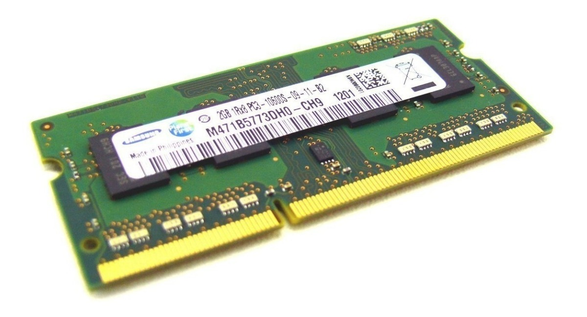

|
|
 |
| ¿Qué es la Memoria ROM? | ¿Qué es la memoria caché? |
|---|---|
La memoria ROM (Read-Only Memory) es un tipo de memoria de almacenamiento que se utiliza principalmente en sistemas electrónicos para almacenar datos que no cambian o cambian raramente. A diferencia de la memoria RAM (Random Access Memory), la ROM conserva la información incluso cuando se apaga la alimentación eléctrica. |
La memoria caché es un tipo de memoria de acceso rápido y alta velocidad que actúa como un búfer entre la memoria principal (RAM) y la unidad central de procesamiento (CPU) de una computadora. Es decir, proporciona acceso rápido a estos datos para evitar la espera que implicaría acceder directamente a la memoria RAM más lenta. Su objetivo principal es mejorar el rendimiento del sistema, y reducir el tiempo de acceso a datos e instrucciones utilizados con frecuencia por la CPU, almacenando temporalmente estos datos e instrucciones. |
| Tipos de Memoria ROM |
Tipos de Memoria Caché |
Existen distintos tipos de Memorias ROM. Estas son algunas de ellas:
|
A día de hoy, al contrario que otras memorias como la RAM, solo existen dos tipos de memorias caché. Estas son:
|
| Uso de la Memoria ROM |
Uso de la memoria caché |
| La ROM se utiliza para almacenar el firmware del sistema, BIOS/UEFI de la computadora, controladores de dispositivos y otros programas
esenciales para el funcionamiento del sistema. Estos datos no cambian con frecuencia y son críticos para el arranque y la operación básica del hardware. Además de su uso en computadoras, la memoria ROM se encuentra en una variedad de dispositivos electrónicos, como consolas de videojuegos, electrodomésticos, teléfonos móviles y otros sistemas embebidos. |
La caché se puede encontrar hoy en día en las CPU de computadoras personales, así como en teléfonos inteligentes, tabletas y otros dispositivos móviles con la intención de mejorar la velocidad de ejecución de aplicaciones y optimizar el rendimiento general del sistema. También podemos encontrarla en dispositivo como consolas de videojuegos (PlayStation, Xbox y Nintendo Switch), que la utilizan para acelerar la carga de juegos y mejorar la experiencia de juego. |